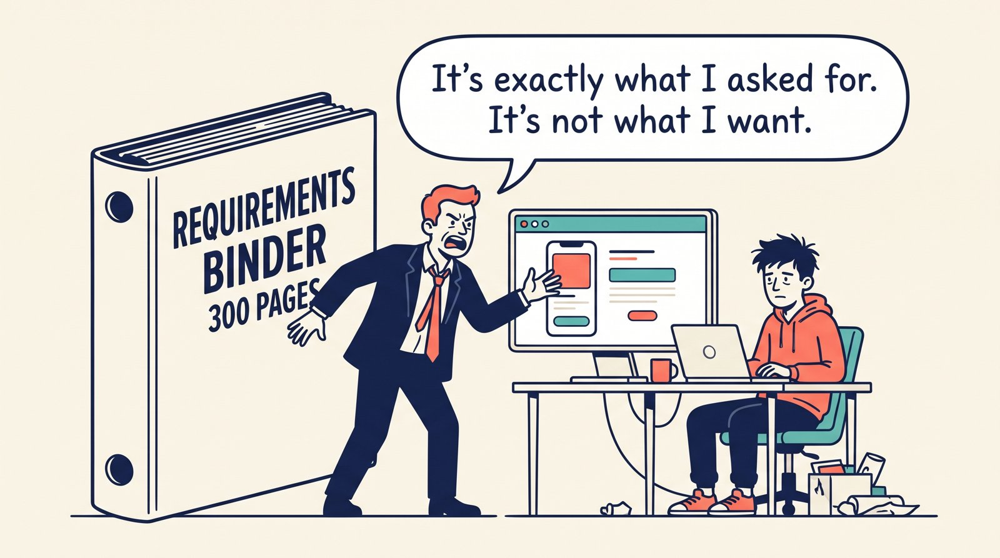
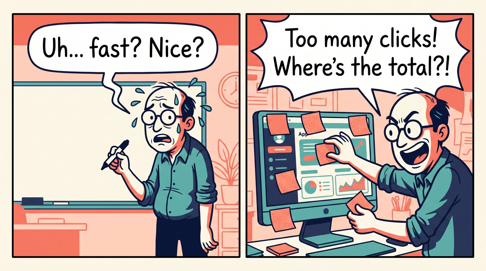
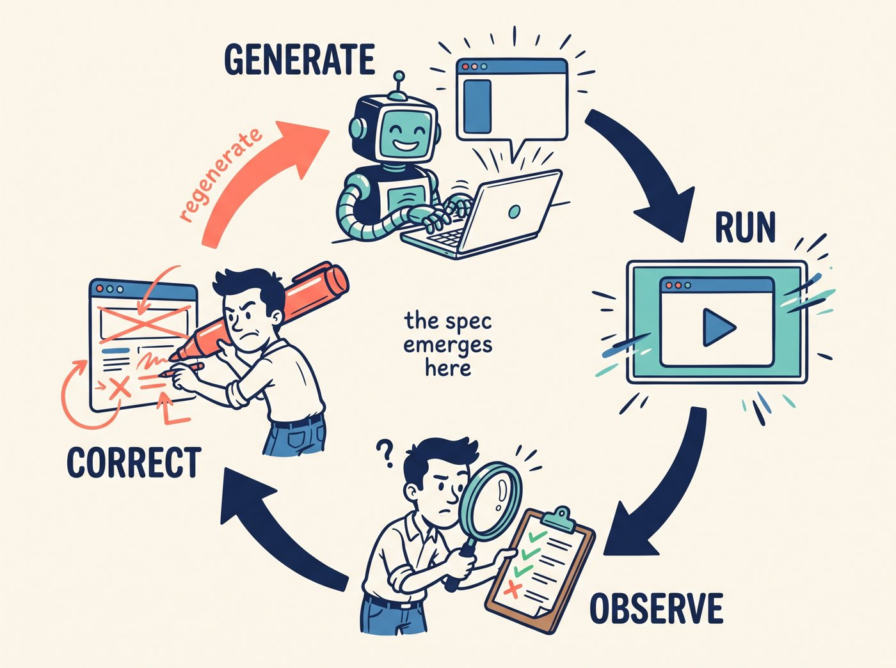
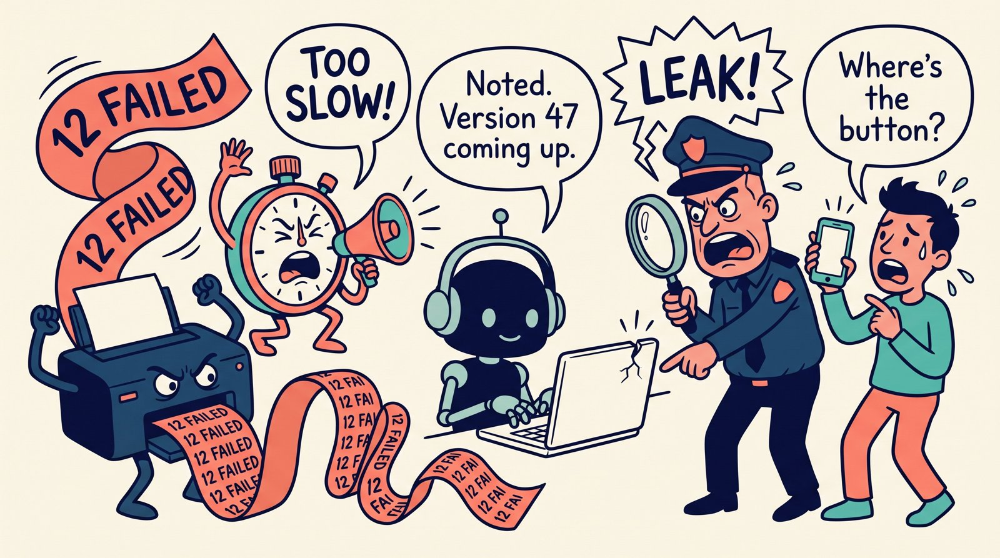
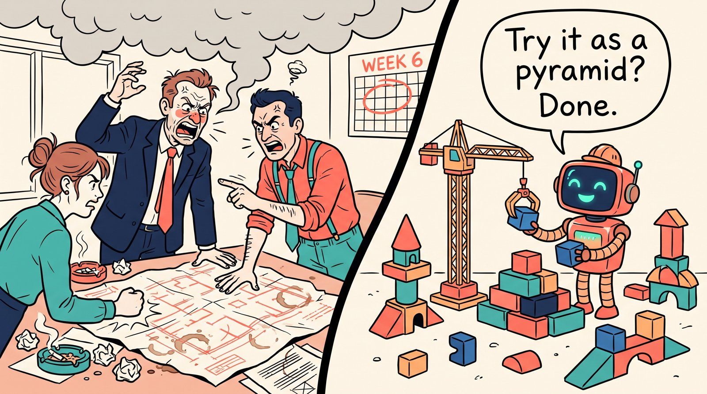
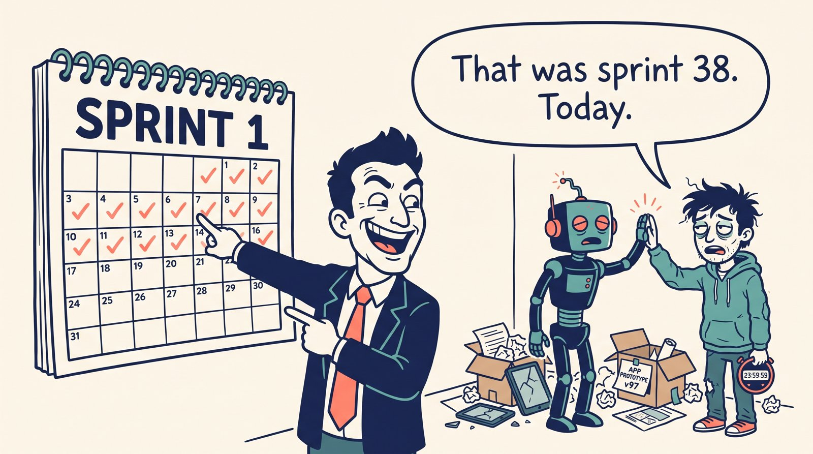
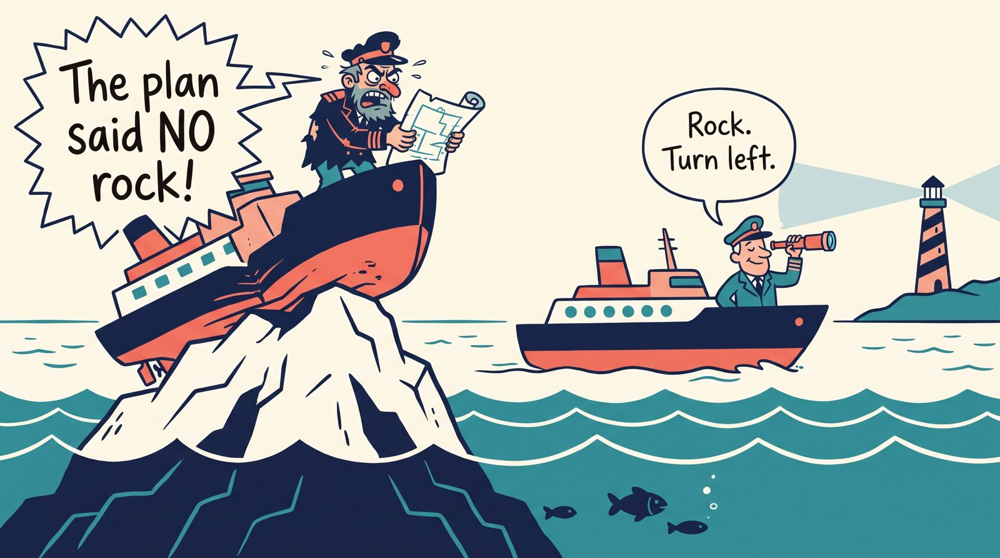
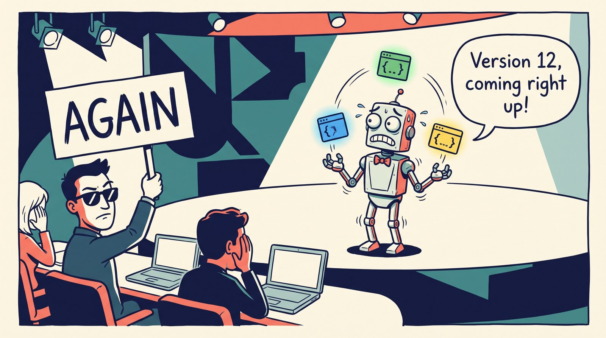

Correction-Driven Development
Don’t Specify What You Can Correct
A development model for the AI era: when change is cheap, recognizing what is wrong beats predicting what is right.

Ask a manager to describe the perfect expense-approval workflow and you get a page of reasonable, vague prose. Put a working version in front of the same person and within thirty seconds you hear: this step is pointless, the total belongs at the top, why do I approve every line separately?
Same person. Same knowledge. A completely different quality of input.
Prediction is hard. Recognition is easy.
Software development is built on the hard one. We write requirements, define interfaces, choose an architecture and set acceptance criteria before anything exists. Even Agile opens each sprint by deciding in advance what to build. The hidden assumption: people can imagine a system that does not exist yet and describe it precisely enough for someone else, now an AI, to build it.
Generative AI breaks the economics behind that assumption. Turning a correction into a new version of the software now takes minutes. That makes a different model practical: Correction-Driven Development, or CDD.
TDD put tests first. BDD put behavior first. CDD puts the working artifact first.

The loop
In CDD you provide just enough intent to get a first working version. Then the loop takes over:

Each version is run, inspected, tested and used. Its behavior becomes evidence. The evidence drives the next correction, and the AI produces the next version. The specification still gets written; it is written progressively, one correction at a time, instead of all at once at the start.
The question you answer changes from “What exactly should the final system be?” to “Given what I see now, what should change next?” People answer the second question well.
What a CDD session looks like
Here is an illustrative forty-minute session building an internal tool that flags duplicate invoices.
Starting intent
“A page where I upload invoice CSVs and see likely duplicates.”
- 0:03generateFirst version runs: upload works, a table of suspected pairs appears.
- 0:06human“Same vendor, one cent apart, and it misses them.” fuzzy amount matching
- 0:09human“I need to see why each pair was flagged.” reason column
- 0:12tests3 of 14 tests fail on DD/MM vs MM/DD dates. date normalization
- 0:17benchmark40 seconds on a 50,000-row file. index by vendor before comparing
- 0:22human“Let me dismiss a false match and never see it again.” persistent dismiss list
- 0:28securityUploaded filename used unsanitized in a file path. sanitize, add a regression test
- 0:35human“The flat list is unreadable. Group it by vendor.” grouped view
None of these seven corrections was in the starting intent, and most of them could not have been. Nobody knew about the date formats until a test hit them. Nobody knew the flat list was unreadable until they saw it. Three of the seven signals came from machines, not people.
That is the whole method in miniature.
Vibe coding is CDD without discipline
Much of what is now called vibe coding already follows this pattern. A developer asks an AI to build something, runs it, looks at the result and asks for changes: simplify this screen, make the table sortable, move that action earlier, undo the last change. The developer interacts mostly with the behavior of the evolving artifact and spends little time in the code.
The criticism of vibe coding as careless is often justified. The interaction pattern, though, is right. When generation is cheap, people abandon exhaustive upfront specification and steer by correction.
Vibe coding is the primitive form. CDD is the mature practice.
CDD adds what vibe coding lacks: systematic observation, automated evaluation, explicit constraints and continuous verification.
Tests are part of the steering
Correction does not rely on human judgment alone. A test is a structured observation of the current artifact.
A unit test observes whether a function still behaves correctly. An integration test observes whether components work together. A benchmark observes latency. A security scanner observes vulnerabilities. A visual regression test observes unintended interface changes. Telemetry observes what real users do.

A person saying “this workflow feels awkward” and a test suite reporting twelve failures are different signals playing the same role: each reveals something about the current artifact and steers the next change. In a mature CDD setup, the AI receives a continuous stream of these observations from developers, users, tests and monitoring. The next revision is driven by what the developer asks for and by what the artifact reveals about itself.
Testing becomes more important in this world. If AI can change software in minutes, you need equally fast ways to tell whether each change helped or hurt.
Architecture becomes a hypothesis
Traditional engineering rewards anticipation. Architects predict which abstractions will survive, where responsibilities should split and which requirements will matter later. Experience improves these predictions, but reality still wins: requirements change, interfaces get redesigned, features get dropped, architectures get refactored. CDD treats this as a normal property of complex development.
Architecture serves reliability, security, performance, comprehensibility and team coordination, and those roles stay. It also has an economic role: much of good architecture exists to make future change affordable. We build modules so parts can evolve independently, stable interfaces so implementations can be swapped, and separated concerns so changes stay local. We pay for architecture because we expect change to be expensive.
When AI can refactor large parts of a codebase, update interfaces, rewrite callers, repair tests and validate the result in minutes, that bet changes.

The value of architecture as insurance against expensive change goes down.
A design decision becomes a hypothesis instead of a permanent commitment. Build a structure, watch how it behaves under real use, revise it when its limits show. The same applies at smaller scale: instead of debating two data models for an afternoon, build one, observe the consequences, and replace it if needed. Reasoning still matters; it moves from speculation to evidence.
The question shifts from “Which architecture will protect us from future change?” to “Which structure best fits what we understand today?” When understanding changes, the structure changes with it.
Agile, with sprints measured in minutes
CDD extends one of Agile’s central insights. A sprint produces functionality, and it also produces information. Users discover that a reasonable-sounding workflow is confusing. Developers discover that an elegant design is awkward to build. Product owners discover requirements they could not articulate until they saw the feature working. The next sprint is planned better because the team has touched the artifact.
Agile’s limit has always been the cost of that learning cycle. A sprint lasts one or two weeks, and even a small experiment needs design, coding, review, testing, integration and deployment. Expensive iterations reward careful planning before each one.

Generative AI compresses the cycle. The learning that Agile spreads across weeks now happens many times in one working session. CDD is Agile with continuous micro-sprints: form an intention, build it, experience it, learn, adjust, in minutes.
When an experiment takes two weeks, careful planning is rational. When it takes two minutes, running the experiment is cheaper than discussing it.
Development becomes navigation
Traditional development resembles construction from a blueprint: the better the blueprint, the fewer expensive changes during construction. CDD resembles navigation. The team knows the destination and adjusts the route continuously from what it observes. The current artifact is both the product of past decisions and the instrument for the next one.

Requirements surface through use of the current system. Architectural weaknesses surface through implementation. Failure modes surface through tests and telemetry. The quality of the process depends less on predicting everything correctly and more on keeping a fast, reliable and informative correction loop.
The developer becomes the judge
As AI takes over the mechanical work of generating and transforming code, the human role shifts to evaluation. The most valuable skill becomes assessing the current artifact: recognizing what is wrong, separating important problems from noise, comparing alternatives, spotting hidden constraints and deciding what changes next.

This is the more demanding job. Deciding whether a system is correct, useful, understandable, safe and heading in the right direction takes judgment that code generation does not supply.
AI performs more of the transformation. Humans provide more of the direction.
When to specify first
CDD reduces upfront specification; it keeps the specifications that earn their place. Decide these before the first line is generated:
- Hard constraints. Safety, privacy, regulatory and security requirements become guardrails for the loop: written once, checked on every pass.
- Contracts others depend on. Public APIs, data formats and protocols are cheap for you to change and expensive for everyone downstream.
- Irreversible actions. Data migrations, payments, anything sent to the outside world. The loop runs in a sandbox; production is outside it.
The rule of thumb follows directly: specify what is expensive to correct; correct everything else.
Two ways to build software
| Specification-driven | Correction-driven | |
|---|---|---|
| Core skill | Predicting | Recognizing |
| Specification | Written up front | Emerges from corrections |
| Metaphor | Blueprint | Navigation |
| Architecture | Insurance against change | Hypothesis under test |
| Tests | Acceptance gate | Steering signal |
| Iteration | Weeks | Minutes |
| Human role | Author | Judge |
The five rules of CDD
- Get to a working artifact early. The first version exists to be corrected.
- Treat every signal as an observation. Human reactions, tests, benchmarks, scans and telemetry all steer the next change.
- Specify only what is expensive to correct. Constraints, contracts and irreversible actions up front; everything else through the loop.
- Hold designs as hypotheses. Build, observe, revise. Architecture follows understanding.
- Invest in the loop. Its speed and the quality of its signals determine the quality of the software.
From building software to evolving software
Specification-driven development treats software as something described, designed and then constructed. Correction-Driven Development treats software as an evolving artifact: created early, exposed to human judgment, tests, benchmarks, telemetry and real users, and transformed by AI in response to what those observations reveal.
Vibe coding shows what the interaction feels like. Agile supplies the iterative philosophy. Automated testing supplies machine observation. Generative AI supplies rapid transformation. Together they make a new practice possible.
The deeper change is economic. As the cost of modifying software falls, so does the value of predicting every modification in advance. The central question moves from
Can we describe the right system before we build it?
to
Can we recognize the wrong direction quickly enough to correct it?
That is the natural way for humans and AI to build software together.
Don’t specify what you can correct.